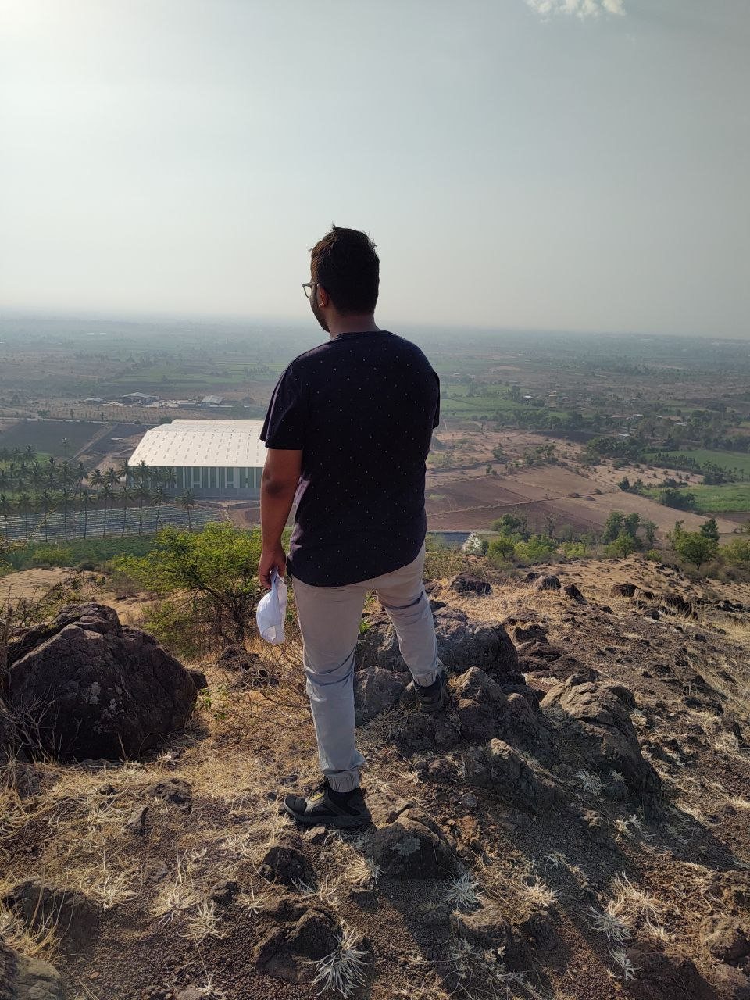

A Developer with interests in NLP, Data Engineering and Development. I'm learning Frontend Development pretty late but hope this is worth it.
I'm an introvert whom you probably shouldn't urge to talk a lot, maybe just do a lot.
November 2022 - May 2023
April 2022 - October 2022
I'm a writer at heart and I love to write Poems.
Check out my poems at: Mind's Couch at Barnes & Noble
Check out my answers on Quora: Quora Profile